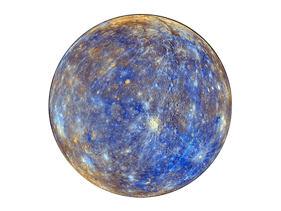
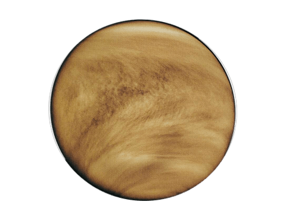
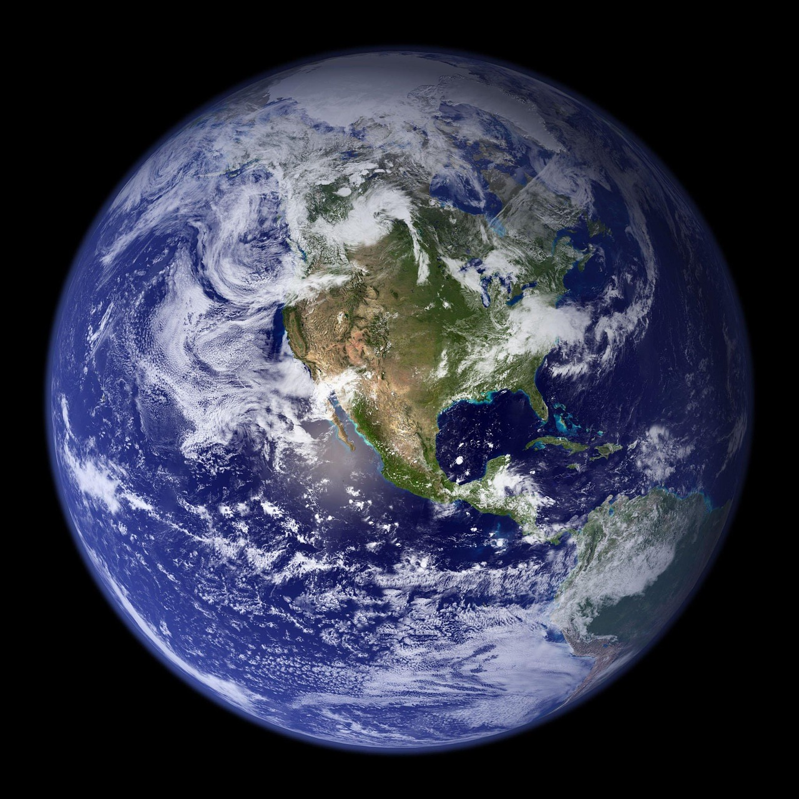
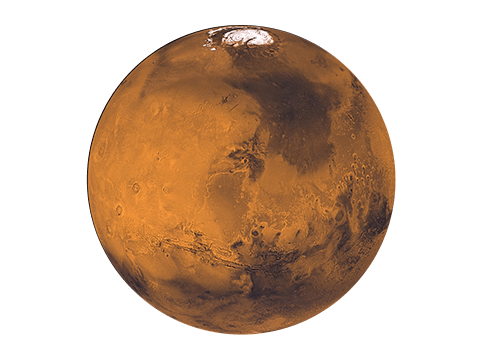
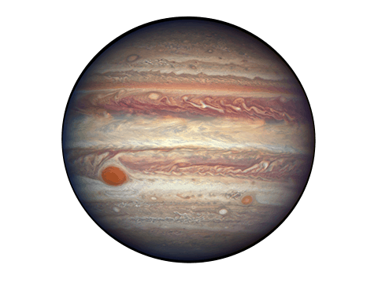
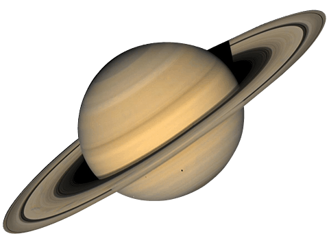
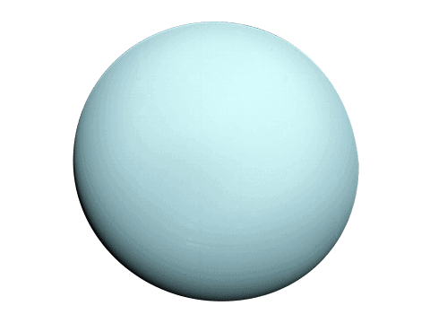
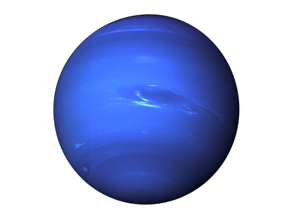

Fun Facts:
Fact 1: The solar system is about 4.6 billion years old.
Fact 2: There's the Asteriod Belt separting between Mars and other terrestrial planets from Jupiter and other gas giants.
Fact 3: There's the Kuiper Belt, filled with various dwarf planets and asteroids, outer around Neptune's orbit.
Fact 4: The closest star to our sun is Proxima Centauri from the Alpha Centauri system.
Fact 5: The planets of the solar system is separated between the terrestrial planets and the gas giants category.







